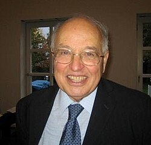

1929–2019
Michael Atiyah

Portrait: Gert-Martin Greuel, CC BY-SA 2.0 de, Wikimedia Commons.
Events (9)
- 1954Hirzebruch-Riemann-Roch theorem
developer · Algebraic topology
- 1957Bott periodicity: Morse theory on loop spaces computes homotopy of Lie groups
developer · Topology
- 1958K-theory and Grothendieck-Riemann-Roch: algebraic geometry enters topology
developer · Topology
- 1959Topological K-theory
originator · Algebraic topology
- 1963Atiyah-Singer index theorem
originator · Geometry
- 1967Twistor theory
developer · Mathematical physics
- 1973Heat equation proof of index theorem
developer · Differential equations
- 1974Lattice gauge theory and Yang-Mills instantons (geometry)
developer · Geometry
- 1988Topological and conformal field theory as axioms (Atiyah, Segal, Witten)
originator · Algebraic topology